CACO：让连续生成召回检索互补的候选集合
CACO 全称 Coverage-Aware Coordinated Optimization for Continuous Generative Retrieval。第一作者为湖南大学 Pan Zhang，原文可识别的合作院校包括华中农业大学。arXiv 预印本 v1 在北京时间 2026 年 11 月 19 日提交，列入 arXiv 11 月 20 日发布列表，本轮未核验到论文专属公开代码。论文考察连续生成召回中查询生成与近邻检索之间的接口，固定现有主干和物品索引，只调整每次请求生成的查询向量。论文入口
连续生成召回会在物品向量空间采样多个查询，并在固定预算下并行查找近邻。向量分布多样或兴趣彼此分离时，返回的近邻仍然可能大范围重合。离散的前 K 个近邻和单一目标监督让召回器难以直接优化整组候选覆盖。
1. 背景和问题
1.1 连续生成器的产物要经过近邻索引才能成为候选
在召回阶段，一个请求通常对应多种可能的下一次行为。用户的历史中同时出现运动装备、手机配件与厨房用品，当前请求缺少足以先验决定唯一分支的可靠信号。若只用一个用户嵌入去覆盖不同习惯，几种兴趣会在共享空间里叠加，最后到达其中一片区域，或者落在彼此之间的稠密物品区域。多兴趣召回把同一段历史转成多个查询，随后分别在目录中找近邻。查询的粒度是用户当前上下文下的一份检索提议，物品粒度是索引里某个可返回的条目。增加查询数能打开更多搜索入口，同时增加索引访问、返回值传输与合并的开销。目录大小、时效和服务预算共同限制可以访问多少个入口以及每个入口可以取多深。
连续生成召回把提议空间设为物品嵌入所在的连续向量空间。流匹配主干可以从多个随机初始点沿条件向量场积分，扩散主干通过一串去噪步骤生成查询。二者都能把历史交互编码成条件信号，并从条件分布得到多个样本。随后每个样本与当前索引统一检索，由查询向量到物品集合的映射是在生成器外部完成。这个分工便于复用向量服务和索引，且在目录发生变化时不必在每次请求时显式构建用户专属分类器。生成阶段提供概率意义下的不同落点，索引阶段则用固定的距离与候选截断把这些落点变成离散条目。不同随机种子生成的查询可能在数值上有所差异，却被映射到同一批条目。
不同兴趣之间也可能有被目录共同表达的部分。用户同时关心猫、狗和宠物陪伴时，包含猫狗同框的内容可以在多个方向上都有较近的语义距离。历史标签把三个兴趣分开以后，选到的向量并不会自动避开共同近邻。相反，有相似内容库存的区域可能出现很强的局部密度，连跨群的方向都不断回到少数共享候选。物品向量的建模和索引中的几何格局共同决定这种现象。由此可见，用同一用户的多个向量之间距离来评估多样性，可以了解提议是否分开，却无法落到账单式的资源消耗单位上。固定检索深度时，索引已经为重复返回执行了查找，重复项只在候选合并时被删除。去重将候选集合整理正确，却无法找回已消耗的查询额度。
1.2 用固定预算观察实际邻域的重叠
在论文的任务设定里，一个请求由按时间排列的历史交互和其他条件信息构成。主干先生成固定数量的检索向量，每个向量在共享索引里查同样多的条目。所有列表取并集后，唯一条目数上限才是查询数与深度的乘积。有两条查询返回完全相同的列表时，第二条查询的检索额度仍被计入预算，但独立候选数没有变化。即便下游能够从一个共享列表中抽取不同分数，也无法推断此前未进入并集的目标。原文将任务定位在召回输出接口上，研究对象是前 K 个近邻的覆盖，而非精排对同一候选的分数校准或商品曝光策略的重新分配。
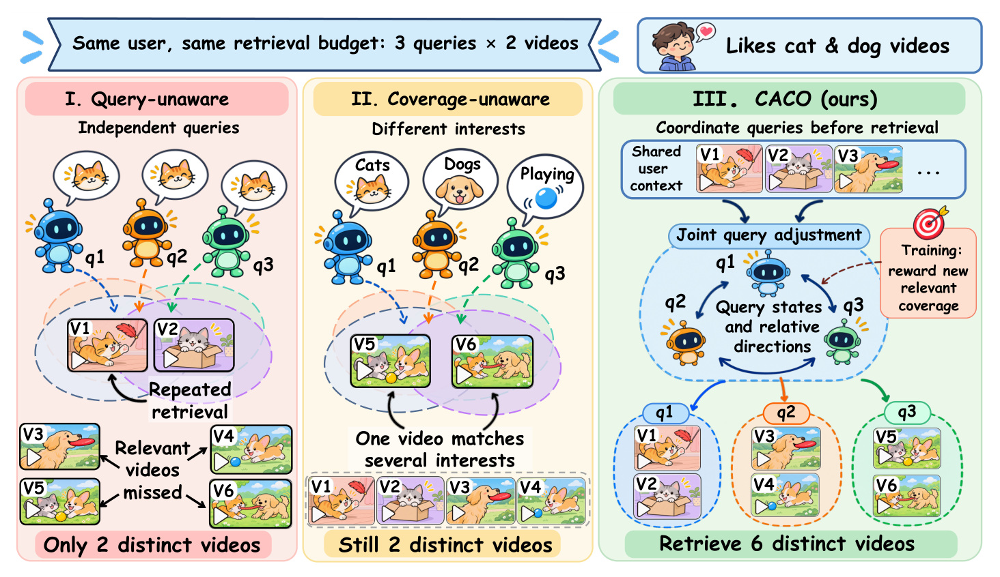
Figure 1 把请求、目录和开销都固定为同一个用户、三个查询、每次两个视频。左栏的三个查询独立取样，图示的三份结果反复命中同一对条目，合并后只有两个视频。中栏将查询标成猫、狗和玩耍的三个兴趣，跨兴趣都有接近的共同视频，因此去重后仍只有两个条目。右栏的三个查询先共享用户上下文，再观察自身与同批查询的相对方向，并在检索之前移动，示意将六次名义返回用在六个不同的相关视频上。这里的六个条目属于概念示例，实际目录的近邻形状由数据和索引决定。它说明算法应比较单个查询为同一组其他查询带来多少新增相关物品。若只看向量夹角，移动到没有预测价值的区域也能让两支向量分开。若只看唯一条目数，系统同样可能扩大无关覆盖。按得到的物品算质量与互补性，才会让“知道队友找什么”产生可以检验的结果。
评价时每段历史只观察到一个留出的正目标，天然缺少同一个用户对其他可能候选的标注。在实际线上，只知道用户在已展示的页面上互动过什么，难以直接得知所有相关的备选物品。若训练时直接把单个目标当作所有查询的优化信号，每个查询都追求同一项，很难学出彼此有用的职责分配。另一个障碍是近邻结果来自离散截断。连续改变查询坐标，大多数小移动可能不改变结果名单，到达边界时某条候选突然换入换出，即使有足够负样本也不能将簇边界当成普通平滑的损失函数。
CACO 的两项准备分别应对上面两种问题。它用同一历史反复采样得到的参考查询频率估计物品相关性。参考池只是冻结主干在现有索引中能经常搜到什么，受主干与索引共同约束，故只承担训练代理信号。然后使用被正负扰动的同组查询做离散替换，在固定队友的条件下观察实际覆盖得分改变多少。在线推理仍只执行原预算下的小批查询，而“大池”和镜像扰动转移到训练端。这里的后训练是冻结生成器后的额外召回训练，作用于近邻入口，不需要在生成模型上学习离散语义编码。由此可将收益拆成三项分别检查：同一预算下是否真的减少重叠，新增候选是否实际命中留出目标，以及增加的请求端计算是否侵蚀收益。
还要区分召回上限和业务实际增益。假设检索到的商品原本也会由其他通路推入精排，当前通路的 Recall 提升不一定增加系统级候选集合。若新条目来自此前已被其他通路召回的区域，跨通路的去重会再次压缩这部分增量。即使目标进入候选，后续模型还要在相同精排限额和业务约束下决定展示位置，用户是否点击也取决于曝光与排序。论文公开数据的留一项指标能回答单路“是否找回”，工业时序回放能回答同一候选规则在一串时间分区是否持续有效。这两组材料都需要保持各自测量分母，防止把单路检索质量外推为整体偏好或线上收益。
2. 方法
2.1 频率加权覆盖
设第一个模块的输入为请求历史、冻结生成器和已有物品索引。生成器给出一组连续坐标，索引对每个坐标查询前若干近邻，再去重合并。这一层先给出式 1–2 的基本约束。
符号解释：$h$ 是带时间顺序的用户历史与上下文，$\pi_\theta$ 是参数冻结的条件生成器，$Q$ 是取样后的查询集合，$L$ 是查询数，$q_i$ 是第 $i$ 个物品向量空间中的查询，$K$ 是单次检索深度，$\mathcal A_K$ 是近邻索引映射，$\mathcal U_K$ 是所有结果去重后的并集。这里的 $LK$ 是检索返回预算，唯一候选数还取决于交集。配置相同才能清楚判定收益是否来自回收本来重复的槽位。
已知用户真实的下一项概率时，最优查询组应覆盖总质量最大的候选。但下一项概率在训练时未知，于是固定同一上下文，用另一个独立采样的参考集合去检索。式 3–5 并列了理想目标与构建权重的两个操作。
符号解释：$v$ 是目录物品，$p^*(v\mid h)$ 是不可观察的真实下一正反馈概率，$J_h$ 是并集捕获的真实质量，$\tilde q_m$ 是第 $m$ 个参考查询，$M$ 是参考池大小，$c_h(v)$ 是包含该物品的参考检索次数，$\mathbf 1$ 是成员指示，$\alpha$ 调节频率强度，$w_h$ 是代理权重。本文正常取 $\alpha=0.5$，高频反馈仍优先，极端高频项的优势被缓和。$\alpha=0$ 单独定义为出现过记一，未出现记零。当参考查询看不到某物品时，该物品可出现在新查询的最终候选并计入评测，而其训练代理权重为零。
符号解释：$F_h$ 是当前查询覆盖的参考权重总量，$\Delta_h$ 是把新查询 $q$ 加入已有 $Q$ 时的条件边际增益，集合差留下队友还未找到的物品。原文先以大池中已有结果做贪心选取，验证这个目标对真实目标召回有用。只要某物品已经覆盖，再返回该物品的边际增益就是零。有正权重的候选向更多查询出现时提升参考权重，但在同一被评估查询组中仍只加一次。
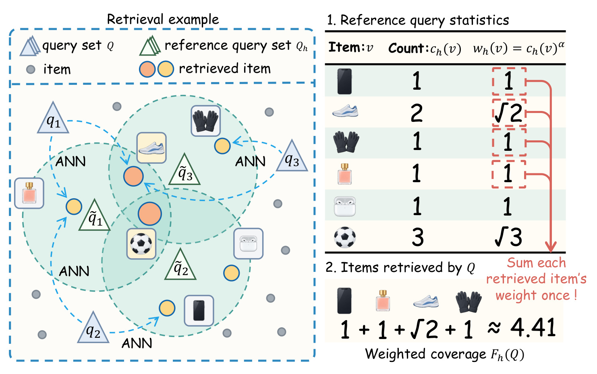
Figure 2 左侧用不同颜色的查询三角形和物品点区分参考池与当前提议。右上记账表统计参考查询邻域内的物品出现次数，鞋在两个列表出现，球在三个列表出现。开平方时两者权重大小分别为约一点四一与一点七三。右下当前查询并集包含手机、香水、鞋和手套，四项各加一次，约四点四一。球即使比鞋更常出现，只要尚不在这组查询的返回名单上，也没有贡献。相反，当前两个查询同时取到鞋只在并集内占一份价值。参考池定义了代理价格，当前并集决定价格何时入账，二者在单次比较中保持独立。图里的算例也解释了为什么只显示 MPJ 会漏掉相关性维度。查询移开后找到新的低权重材料，只有总覆盖价值确实上升，训练才受益。训练用的参考数量大于服务预算。若在服务时遍历大池，即使向量生成可以批量运行，索引层仍要支付相应深度的额外检索。
2.2 协同查询调整
协同调整在检索前处理整组查询。 调整网络读取主干的历史隐藏态和原来就会生成的 $L$ 个单位向量。它把每个查询投影到自身隐层空间。第一个注意力块将历史作为键值，第二个块让同请求内的所有查询向彼此读状态，没有生成次序的遮罩。每层的第三步是前馈变换。式 8 给出更新顺序。
符号解释：$H_h$ 是冻结主干历史编码器输出，$X^{(0)}$ 是投影过的原始查询，$\ell$ 是调整层索引，横杠表示层归一化，$S$ 和 $U$ 分别是吸收历史与同批查询信息后的中间状态。$\operatorname{FFN}$ 提供逐查询非线性。利用历史可以约束移动方向，双向自注意力则提供请求实时的邻队分布。这里的互看发生在近邻检索之前，网络看的是查询的表示，ANN 的实际交集由训练的反事实检索提供监督。结构没有在线执行一轮试搜再重排，也没有把自注意力结果直接解释为最终重叠矩阵。
符号解释：$r_i$ 是原始残差，$W_r$ 投影最终隐状态 $X_i^{(N)}$，$\dot q_i$ 与 $\dot q_j$ 是冻结生成器提供的原始单位查询，$A$ 是注意力头数，$a_{ij}^{(a)}$ 是最后一层第 $a$ 头对队友 $j$ 的注意力权重，$w_a$ 是该头共享的可训练向量，$\beta_{ij}$ 是合并后的带符号系数。单个注意力权重一般非负，投影出来的状态系数允许负值，故相对方向可以被正向加权，也可以反向推动。向某队友靠近有助于接管主干已估计为有价值的区域，远离则有机会避开高度重复的邻域。门控学习的方向取决于当前历史和队友，避免用固定排斥力把全部查询往未知区域推开。
符号解释：$P_i$ 是对原查询处切平面的投影，$t_i$ 是剔除径向分量后的向量，$\mu_i$ 是有界切向步，$\rho$ 是长度上界，$q_i$ 是更新到单位球面的最终查询，$\langle\cdot,\cdot\rangle$ 与 $\|\cdot\|$ 分别为内积与欧氏长度。正交保证 $\dot q_i+\mu_i$ 的模长与分母匹配。把 $\rho$ 设成三十二度的正切，确定性位移角度上限相应约为三十二度。残差和门控输出层零初始化时，状态变换起步等同恒等映射。原索引采用单位向量时无需更换相似度接口。强约束能保护主干已学到的局部匹配，过紧则很难跨越近邻结果的稳定区域。查询对之间的自注意力会随查询数增长，二十条的实际代价并不能证明任意预算下开销都小。历史交叉注意力仍需读取时序隐藏态，若主干没有稳定输出对应张量，就会改变此模块的接线以及复用成本。
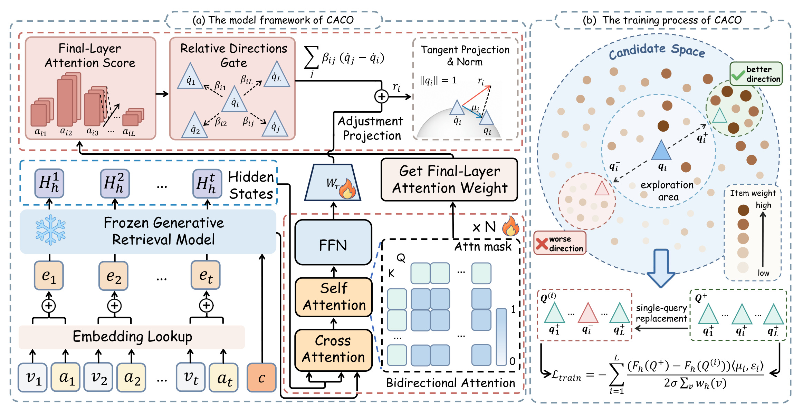
Figure 3 左下从交互物品和动作开始，将主干历史编码结果重复提供给调整层，图中的雪花表示生成模型保持冻结。中间块依次读历史、读同批查询、变换状态。跨查询注意力的末层权重还沿上方支路进入相对方向门，与每条查询自身的输出投影一起形成向量残差。左上切空间框把该残差限制在原查询球面的切向，平滑限幅后回到单位球面。图里同一组查询不用按新顺序串行更新，每条路径并行输出调整位置。右面训练图中的两个扰动对应同一个原查询处的正反变化，其他查询实例保持固定，故两个候选并集的差异可以分给这一局部改变。深色物品点代表较高权重，已被同组查询取到的点没有二次收益。底部损失将右侧实际索引返回转换为左侧网络可微的方向更新。服务仅保留左面部分和调整后固定次数的查找。右面依赖大池与差分索引，它解释训练所付的额外成本，并不位于服务路径。整个设计也只改变生成端的向量，不需要修改目录主干嵌入的训练逻辑。左侧图将同层所有查询状态送入自注意力矩阵，所以右侧的信用分配需要使用同批生成的完整查询组来训练。若先对每个查询分别采样并丢掉原请求内部的组边界，注意力里的队友和实际联合检索里的队友就会失配。网络不显式得到索引返回作为推理输入，训练中的索引变化是参数曾经看过的环境。如果更换近邻算法导致同一单位向量得到的前二十名重新排列，估计的互补方向也可能改变。服务接入需要重放同一候选索引和新索引下的配对，例如先对冻结 Base 及新调整器各自回放，量化索引新鲜度和模型改动分别造成的变化。
2.3 单查询替换估计边际覆盖梯度
用固定队友下的正负近邻差给单条查询分配信用。 调整器输出的确定性坐标需要转接到不可直接求导的 ANN 结果。对当前每条原始查询，在切平面采独立高斯噪声，并在相同方向的两侧生成一对镜像位置。每一条查询都得到一个正分支和一个负分支。这些查询坐标通过实际索引检索。
符号解释：$\epsilon_i$ 是各查询独立的标准高斯噪声，$\sigma$ 决定局部探索尺度，$P_i$ 把扰动投影到切平面，$q_i^pm$ 对应一次实际近邻查询。$Q^+$ 收集全部正分支，$Q^{(i)}$ 只把第 $i$ 个正分支换为配对负分支，$\mathcal I$ 是物品全集，分母是本上下文参考物品的总权重，$\Delta_i$ 是两套候选并集的归一化差值。分母对本次比较固定。某条扰动找到队友都已找到的条目时，对应权重变化被覆盖抵消。按镜像比较使正负方向能够共享当前同时出现的背景队友，而不是将更新误归因于别的查询也换了结果。实现只需对每条查询取正负各一份返回列表，总计 $2L$ 次，构造 $L$ 个反事实版本时可重用列表。
符号解释：$\mathcal L_{mathrm{train}}$ 是用于反向传播的代理损失，$\mu_i$ 是网络有梯度的切向步，$\Delta_i$ 由过一遍索引得到并停止梯度，内积衡量更新沿采样方向的分量。正分支覆盖得更好时，最小化损失会给予朝这个方向移动的训练信号。附录定理 C.2 的无偏性限定在固定参考权重下的高斯平滑归一化覆盖梯度。该结论不会把参考权重变成真实用户偏好，也不给出无平滑离散目标的全局最优保证。若两个镜像点都落在同一近邻稳定区域，$\Delta_i$ 很容易为零；放大扰动可以打破稳定区，却可能提供偏离可部署位移的训练信号。训练阶段保持主干与物品嵌入不动，只调整网络参数。第一轮参考池来自原主干，第二轮更新成经第一轮调整得到的查询，以补充最初参考尚未覆盖的候选。原文的固定权重推导对应单步反事实比较，每次刷新后优化目标的代理分布已变化。
3. 实验结果
3.1 数据、主干与固定预算协议
八个公开集合包括 Amazon Reviews 2014 的 Beauty、Sports、Toys，Amazon Reviews 2023 的 Instruments、Games、Movies，以及 KuaiRec 和 MovieLens-25M。Amazon 采用官方五核子集，评论记正反馈。MovieLens 只保留评分至少为四的正反馈，KuaiRec 使用大矩阵中观看比例至少为一的互动。后两组同一用户与物品只保留最早的正反馈，过滤不足五个独立正物品的用户。每个用户按时间取最近一项测试、次近一项验证、此前历史训练，编码序列长度上限二百。结果列表去重，并过滤用户历史中出现过的项目。单个测试目标的命中率依赖这一协议，该数字不能显示模型找回了几种独立兴趣。
各方法在同一数据集共用固定的、一百二十八维单位物品向量，公开数据用两层因果 Transformer 在训练序列上做下一项预训练，私有数据用单位化多模态表征。基线包括 ComiRec、REMI、MIMA 的多兴趣检索，TIGER、LATTE、LLaDARec 的离散生成，以及 DreamRec、DimeRec、PreferDiff、TA-Rec、ADRec 和 X-Rec 等连续方法。离散组先解语义标识，再在同一向量索引查近邻。Base 使用去掉锚点条件的 X-Rec 风格结构，在单位球面做流匹配，公开 Base 生成部分采用八层、隐藏维度二百五十六、三十次欧拉步。CACO 两个调整层的隐藏维度为一百二十八、四个头，作者给出约六十万新增参数。冻结 Base 的配对更容易归因到查询调整，跨不同架构的横比还受到向量生成机制的差异影响。
公开数据通常用三个训练种子，每个模型再用两个推理种子。主表的两种请求预算分别为十乘十和二十乘二十，Recall@100 与 Recall@400 的分母是测试请求数，分子是目标出现在去重并集内的请求数。没有将不足预算的去重结果按更深索引补满。平均查询对重叠使用式 15。
符号解释：$\operatorname{MPJ}$ 对同一请求的各查询对求平均，分子是两个近邻集合的交集大小，分母是并集大小，前缀系数是有效查询对数的倒数。再对测试请求等权平均，得到表中的全局重叠率。两条高价值查询存在部分重叠时仍可能互补，因此 MPJ 与 Recall 应分别报告。相同 MPJ 也可能对应不同的候选频次分布，和去重后的列表长度并非一一对应。
3.2 公共数据主结果
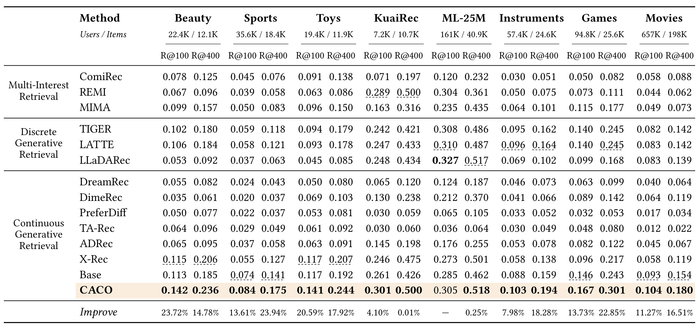
Table 1 以上半行列出各数据的用户与物品规模，该表每个集合都有两个指标列，分开比较一百和四百名义预算。最后一行相对提升默认用该列最强竞争者做分母，和仅与冻结 Base 配对的读数不同。Beauty 的 Recall@100 为零点一四二，用约零点一一五的最强基线得到最高的百分之二十三点七二相对提升；Sports 的 Recall@400 为零点一七五，相对于约零点一四一是百分之二十三点九四。表格显示的三位小数不足以重算作者使用原始均值的最后两位。相对增幅也不能当成绝对百分点。和同一冻结 Base 比，作者给出的绝对增量在一百预算为一点零一至三点九九个百分点，在四百预算为二点五五至七点三六个百分点。较宽查询组获得的绝对增量总体更大，符合更多查询之间存在更多可回收重叠的假设，但实验同时加宽了查询数与深度，不能将差异单归到其中一轴。沿表格同一数据集往下看，还可以发现弱多兴趣或慢扩散的基线落后并不代表连续向量本身足够。X-Rec 虽然同为连续方法，在 Toys 大预算的零点二零七仍低于 CACO 的零点二四四。这个横向差距包含主干建模选择，只有同一个 Base 与接入调整器的比较冻结了生成器。公开表共十六个数据与预算组合，对每格取各自主方法最强对手之后，再选最大百分比做摘要，天然会突出最有利实例。大兴趣库表现更有代表性的读法是同时报告最强与最弱端、单个数据的多种预算以及共同基准下的绝对差。
MovieLens 在小预算是明确反例，LLaDARec 为零点三二七，CACO 为零点三零五。大预算两者分别为零点五一七与零点五一八，差距仅约零点一个百分点。KuaiRec 某个大预算对照在三位小数显示相同，表中相对改善仅百分之零点零一。若任何读法声称八个集合显著领先最强基线，都超过这张没有逐行统计显著性检验结果的表所能支持的程度。同时，主表是算力和召回目标的一个交汇点，去重并集仍可有不同实际候选数。若下游强制从各方法只吃完全等量的同一合并排序前缀，目标能否留在这个前缀里需要单独计算。
3.3 工业数据的时间维度
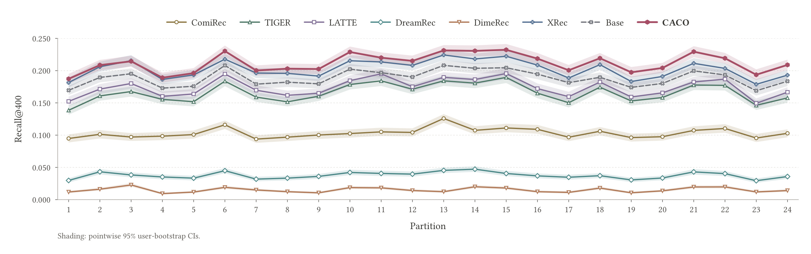
Figure 4 的横轴按时间排列二十四个分区，纵轴是相同二十乘二十预算下的 Recall@400，曲线上的点对应每分区一万零二百四十个测试实例，着色为聚类自助法给出的逐点百分之九十五置信区间。作者首先在独立历史语料上预训练各方法十万步，再按时间顺序做监督微调和评测。每分区约二百六十万训练实例，测试实例目标集合组成该分区的 ANN 候选池。CACO 与 X-Rec 在早期接近，后期曲线多处相对 X-Rec 领先，相对自家 Base 的差距作者概括为持续约二至三个百分点。若曲线随所有方法一起升降，可能反映候选池或互动分布变化，因此读同一分区的配对差比把前后两点直接相减更合适。单点置信带还不能代替同时覆盖二十四个分区的置信结论，图中没有提供线上分桶、点击和业务指标。工业数据验证的是这份私有目录及时间切分下的目标命中改善，且目录的组成规则使绝对召回不宜与开放目录服务直接类比。
3.4 替换冻结主干时的表现
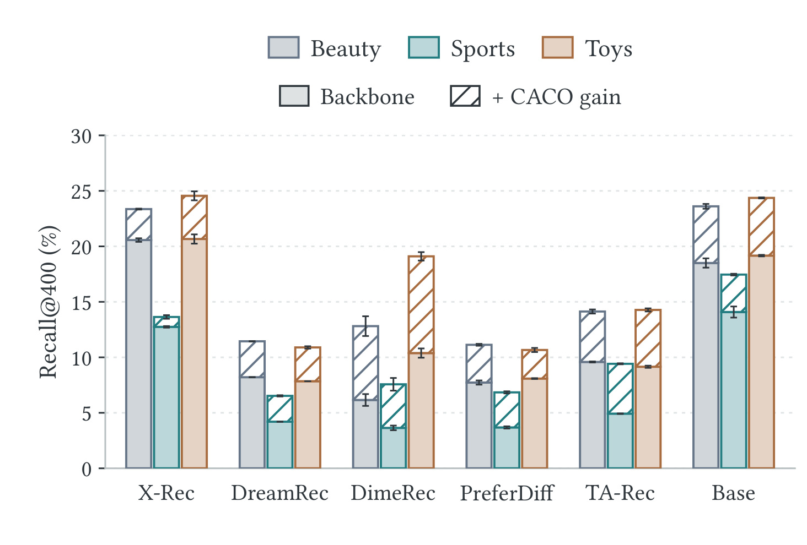
Figure 5 每组横轴对应一套连续生成主干，组内从左到右是 Beauty、Sports、Toys。实色柱是原查询的 Recall@400，斜纹是基于相同初始查询经调整后的增量。误差条用三个训练种子的均值标准差，每个均值都先取两个推理种子。十八个组合都报告均值提升，绝对区间零点八九至八点七二个百分点。最大幅度来自 Toys 上 DimeRec 的百分之十点三八至十九点一零；较强 X-Rec 在 Beauty 从二十点五七到二十三点三六，在 Toys 从二十点六六到二十四点五五。斜纹高度较大可能来自未调整主干的邻域较集中，不能据此认为较弱主干调整后的绝对召回已高于强主干。对照会取各自冻结主干的历史编码，并分别训练对应调整器。可迁移的证据在于相同后训练机制适配不同连续生成器，并非一个网络的权重可以直接接到另一主干，也不能覆盖不同向量空间和存量索引无兼容契约时的跨服务迁移。
3.5 实际重叠与批量耗时
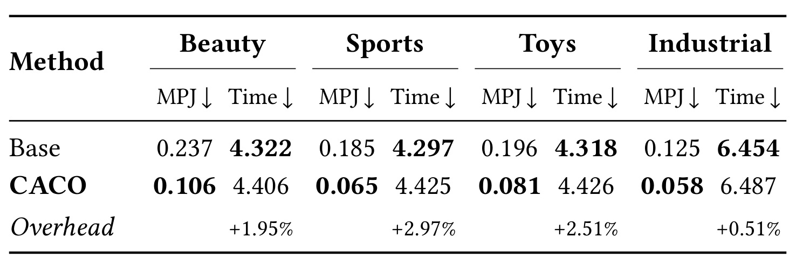
Table 2 把 Beauty、Sports、Toys、工业数据并排列，左子列是 MPJ，右子列是批量平均后的毫秒每样本。Beauty 的重叠为零点二三七降至零点一零六，Sports 为零点一八五降至零点零六五，Toys 为零点一九六降至零点零八一，工业分区平均为零点一二五降至零点零五八。作者报告相对下降约百分之五十三点三至六十四点九。时间测量使用 H100、批大小三十二，计入查询生成和 ANN，Base 与 CACO 共享索引。Sports 从四点二九七增至四点四二五毫秒每样本，约增百分之二点九七。工业均值从六点四五四增到六点四八七，约百分之零点五一。相同近邻调用次数下，这些毫秒数体现了调整模块额外开销较小，以及原有生成和索引流程仍占较大部分。表中没有在线排队、跨进程总延时或尾延时的测量。服务并发、响应拷贝与下游增大的唯一候选集也未被这一均摊值覆盖，不能用其推算 p99、增配或容量变化。就同一批数据看，四个数据的时间增幅和重叠下降没有按比例变化。工业端相对时间最便宜也可能是原路径更耗时，因而相同小额计算分摊后比例更小。若离线返回使候选需要送过更宽的精排入口，所省的重复槽位和所增的全量候选下游计算会共同决定请求总成本。读表时还应把固定的 GPU 和批形状作为连在数字上的标签，低批在线请求可能不能复用同一设备利用率。复验可交替提交 Base 和 CACO 的同组输入，并独立观测实际 ANN 并发与每样本均摊，以避免覆盖收益端、服务延迟端各自换了实验条件。
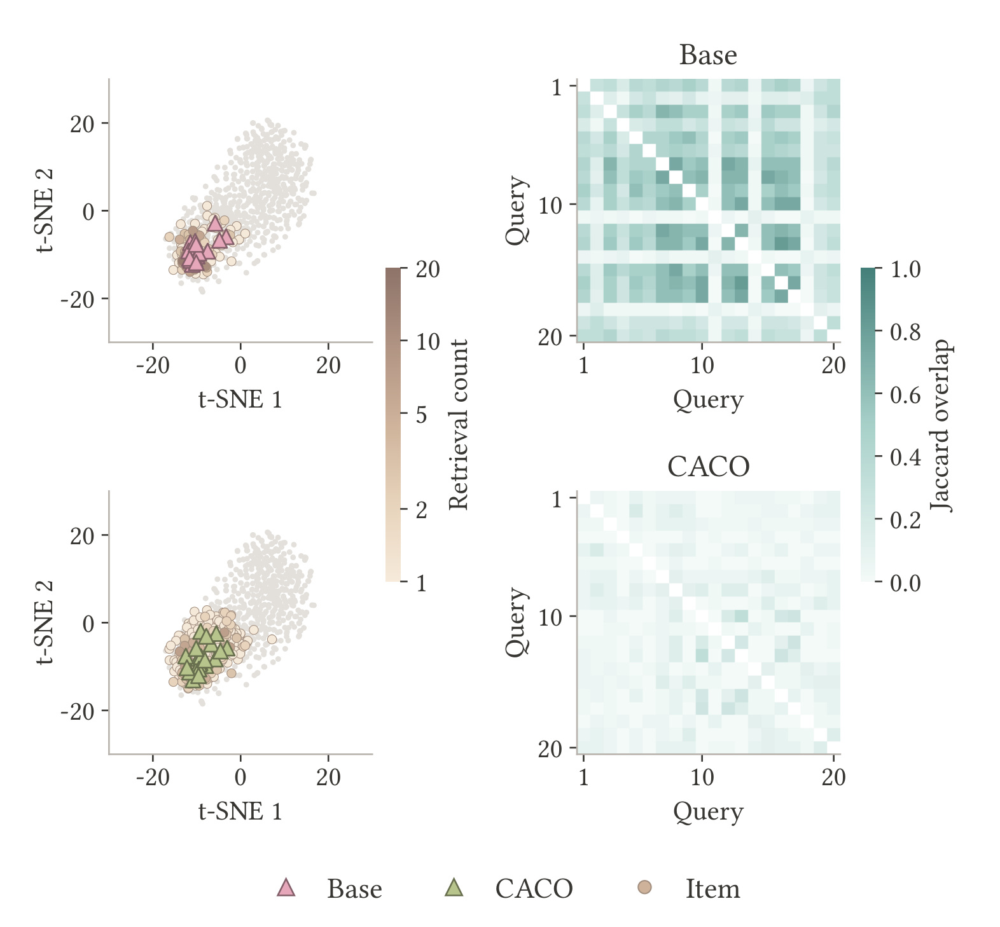
Figure 6 左列把两种方法的查询和近邻项目放在同一个二维投影，点色深浅代表该项被多少查询返回。右列横纵轴对应查询编号，深绿表示检索集合的 Jaccard 更大，对角线自相关留白。Base 上方矩阵显示大片相似行列，作者描述十条以上查询反复取相同候选，平均重叠零点三零六，去重后仅一百零四项，目标没命中。CACO 下方矩阵变浅，重叠降到零点零四八，去重后有二百三十二项，目标回来。这比从二维投影肉眼读距离更直接，因为矩阵用的是原索引返回集合。共享投影让上下两幅在可视化坐标上可比，但二维图会扭曲高维距离，不能用它估量实际角度。单例支持某个高重复请求把预算转向互补候选的机制，整体召回和平均重叠的量级仍应读主表。尤其留一目标回来后，质量可能集中于一个重新开出的局部区域，不能把一例理解成所有主题均匀扩展。
对于固定四百槽位，附录 Table 10 做十乘四十、二十乘二十、四十乘十的再分配，在 Beauty、Sports 和 Toys 的九个配对中分别有二点八七至六点四零个百分点绝对改善。它使用一个训练种子、两个推理种子，训练用二十查询后不重训，属于部署形状的敏感性检查。增益较大的宽配置本身可能有较低的管线绝对召回，应区分“对同形状 Base 提升最多”和“最终值最大”。附录 Figure 16 另在第一工业分区增加每次检索深度，在按排名逐轮合并最多四百唯一候选时，作者描述 CACO 深度三十二达到百分之二十召回，Base 深度约二百才追平。右轴的零点五八与一点三七毫秒是各深度的共享 CPU ANN 参考耗时，取两种方法均值。图中没有各方法独立完整链路的端到端耗时。这两项配对回答不同问题，前者固定名义访问量，后者用更深列表交换命中且封顶下游集合大小。
3.6 代理覆盖目标与训练消融
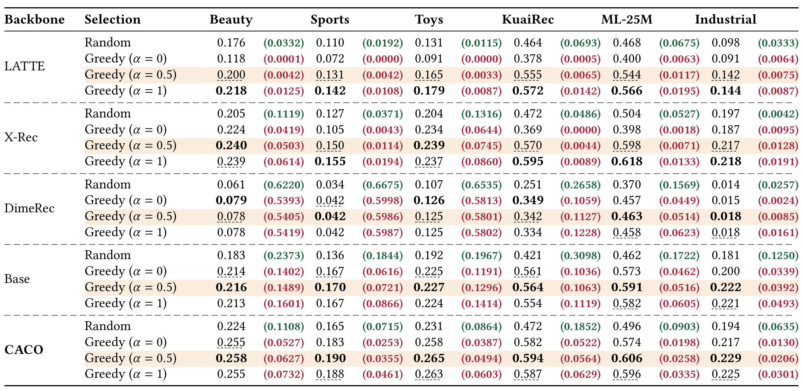
Table 3 的每个主干组先列参考池随机选二十个查询的结果，再列三种贪心规约。每格首值是 Recall@400，括号里是 MPJ。同一参考池可比较从相同已产生近邻中怎么组合，并没有训练一个新查询模型。指数为零点五或一时，五种主干与六个集合的三十个组合里均优于随机，说明频率代理足以指导这项组合实验。Base 工业组合在零点五时的召回从零点一八一至零点二二二，重叠从零点一二五零降为零点零三九二。值得单独看 LATTE 工业组，纯去重把 MPJ 从零点零三三三降到零点零零六四，但 Recall 从零点零九八降至零点零九一。用零点五和一则分别得到零点一四二和零点一四四。重叠降低若以丢掉高相关区域为代价，最终并集可更大却更少命中真实目标。贪心实验从两百个已检索的查询里挑二十个，不能和只生成二十个入口的 CACO 推理直接比较生产成本。两者共享的是目标定义与预算下的趋势验证，执行代价应分开。对同一查询池只做组合重排的实验，还揭示了可用信息已经存在于主干长尾落点中。正权重有利于挑出包含已见高价值物品同时又带来其他邻域的查询，然而在部署预算下这些落点未必被原随机样本生成。协调模块要用有限样本近似大池先看后选的能力。不同主干初始重叠和参考频率的偏好不同，单凭表中最大增益不能挑定一个通用指数。对大池意外漏掉高质区域的影响，也要和按权重在大池中如何取二十条分开排查。
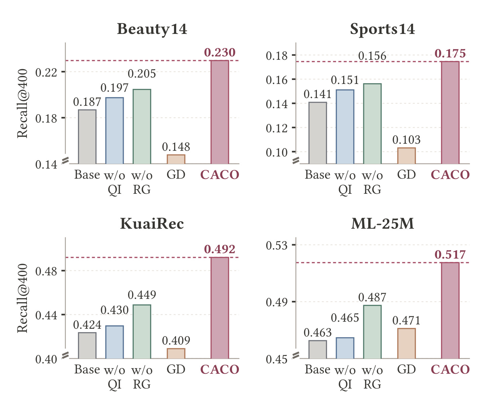
Figure 7 在四个数据集各给一个独立纵轴，左到右有冻结 Base、去掉查询交互、去掉相对方向门、用贪心蒸馏训练，以及完整 CACO。纵轴截断，因此应读柱顶数而非用柱高作比例。在 Beauty，五列约为零点一八七、零点一九七、零点二零五、零点一四八和零点二三零。KuaiRec 相应为零点四二四、零点四三零、零点四四九、零点四零九与零点四九二。遮住查询间注意力同时使跨查询门控项失去信息，所以这是一项结构连锁干预。只去门控的读数更接近完整模型，说明注意力与方向残差各有贡献。贪心蒸馏将大池选出的查询和网络输出配对，以向量余弦拟合。外观上向量接近不保证落到同一个离散近邻集合，这给消融的负结果提供机制解释。ML-25M 蒸馏零点四七一略高于 Base 的零点四六三，该异常说明应表达为蒸馏整体落后于完整边际训练，而非蒸馏在所有集合都差于 Base。Figure 7 个别读数和 Table 1 不同，应按各自对照读取，不应拼成跨图的单组效应。具体说，Figure 7 的 Beauty Base 与 CACO 是约零点一八七和零点二三零，主表 Beauty 同预算行是零点一八五和零点二三六。引用二者各自读数时应带上来源，不能从图中拿某一个消融值和主表的完整值重新计算相对降幅。在结构消融外，若要继续确定是否相对方向的符号而非额外参数带来效果，可用同规模随机门或仅正门做约束，记录全部对照的起点、参考池与选择规则。目前原图只足以说明所测的门控整件在这些训练设置下增加了均值。
参考池刷新比较一轮结束、两轮不刷新及两轮刷新。匹配两轮之后，五个公开集报告参考池刷新后的 Recall@400 配对提升零点一二至零点八九个百分点，覆盖每个已报告的训练种子。更多刷新轮次逐渐进入平台期。参考池规模横扫从二十到八百，三个 Amazon 集中二十参考查询已取得约百分之八十九至九十一的增益比例，比例分母是对应八百参考查询的增益。该结果容许在训练资源不足时检查缩减大池的边际成本，但小池依据更少样本建立相关性估计，训练预算与线上预算两套数字得分开保存。
3.7 个体失败及收益的分层解释
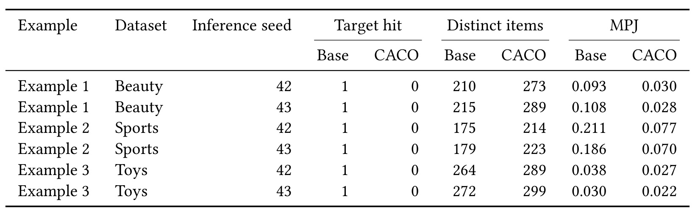
Table 9 为 Beauty、Sports、Toys 各选了一个失败请求，每个请求展示两个推理种子。目标命中从一改为零的同时，两种中间指标朝总体平均期望移动。Beauty 种子四十二原来覆盖二百一十项，调整后覆盖二百七十三项，MPJ 零点零九三降至零点零三零。Sports 的同种子从一百七十五到二百一十四项，重叠零点二一一降到零点零七七。低重叠的 Toys 也有类似反例。该表的首个指标是正反馈物品是否仍能进入并集，后两项只量到候选形状。发现许多较分散的替代品，无法补偿本次唯一留出目标丢失。反例经过选择，只表明失败模式确实存在，不给全量比例。附录 Table 8 从验证期 Base MPJ 分位形成分层，对测试分别数新增和丢失目标，各层净召回整体为正，高重叠层绝对增益较大。实际对照应同时保留 gained、lost 与净变化，关注丢失是否在少数类目、短历史或特定高价值候选上集中。若把高重叠分层当生产门控，还需用未见流量确定分界值。
4. 总结
4.1 研究判断
这项研究把连续生成召回的重复开销落到可数的索引候选集合。它保留冻结主干和共享目录的工程接口，请求内的小网络可以联合改动若干查询，而实际 ANN 的不可导边界仍被访问，训练信号来自一条查询正反两种结果为同组并集带来的权重差。冻结同源配对、多主干前后对照、工业时序回放和目标丢失案例分别回答不同问题。最适合引用的数字组合是固定两种预算、共同索引下的目标召回与重叠，同时写上 H100 批三十二的均摊开销。这样可将改动定位到查询发出的地方，以及额外候选真正出现的地方。附录的失败表也使调整风险具有可测的观测量，不能用空泛的“候选变多”替代。若系统没有逐查询结果可供回放，候选去重后的最终长度能显示预算损耗，却难以定位是两三个局部热点还是所有查询收缩到了同一个目录区域。把查询粒度和请求粒度的日志分别保留，有助于判断该在向量方向纠重、将固定预算重新分配给检索深度，还是改写后续候选合并策略。本文已提供这三项调查中第一项的实验方法，对于纯深度调优和跨召回源扩展仍需匹配对照。
4.2 局限边界
- 频率权重服从生成器及索引已经覆盖的空间。新物品或稀疏兴趣可能从未被参考查询命中，即使是有效候选，在当前代理损失中也记零。刷新改善范围仍受已学到的调整路径限制。
- 公共数据是时间排序留一正目标，未观察同一请求中其它可替代物品的反馈。目标在并集内也不会说明它能进入后续带约束的展示位置。多通路系统还要计算全局去重后的净独有候选。
- 工业结果是私有时间分区回放，候选池由分区目标集合组成。该范围与随机线上流量、目录实时上下架和服务实际曝光机制存在差别。图中置信区间解决的是该回放下的不确定性。
- 延迟来自统一索引下的批量样本平均，未公布尾部成本、具体分片和同万级并发下的调度成本。更多真实不同物品还可能提高下游精排开销，这部分需要独立量化。
- 平滑梯度在固定代理权重及指定噪声下成立，步幅、权重指数、索引变化与查询深度改变后，边际收益的稳定性仍要验证。公开材料也没有可核验的独立实现来锁定全部索引与训练细节。
4.3 后续验证
- 在已有连续召回路径建立逐请求配对回放，固定主干检查点、物品库快照、查询种子、索引配置、候选上限和合并策略，同时统计查询重叠、唯一数、命中得失、下游存活与不同类目的变化。由此才能观察节省的预算是否真的转换成新增可用候选。
- 同一个策略分别评估高重叠与低重叠请求，记录查询调整角度、正负替换在 top-K 处的换入换出、负收益比例。若高重叠收益集中，可以在独立验证窗检查按请求选择回退原查询，或保留一条原查询作保护的变体。
- 在同配额影子流量记录生成、调整、ANN、合并和精排的分段延迟与尾部。近邻重建前后各跑一次，结合分片预算和下游候选封顶观察稳健性，避免用批量平均时间推估服务端容量。